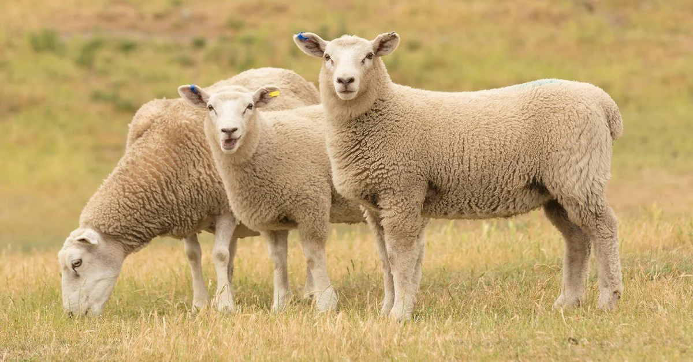

Sheep are domesticated herbivores commonly raised for their wool, meat, and milk. They belong to the genus *Ovis* and are one of the oldest domesticated animals, with a history spanning over 10,000 years. Sheep are known for their gentle nature and strong flocking instinct, often staying close together for safety. They are grazers, feeding on grass and other vegetation. Sheep are found in a wide range of environments, from mountain ranges to lowland pastures, and are integral to many agricultural economies worldwide.
Sheep are also important for their role in agriculture, particularly in wool production. Wool is sheared from the sheep once a year and is used to make a variety of textiles, including clothing and blankets. In addition to wool, sheep provide a source of meat, commonly known as lamb or mutton, depending on the age of the animal. Sheep milk is also used to produce cheese, such as feta and manchego. Their adaptability to various climates makes them a valuable resource in many regions around the world.
Sheep. If you want to learn more about sheep, click on this website
Sheep. If you want to see a picture of sheep. Click on me
Country |
Ratio |
| New Zealand | 1 person per 6 sheep |
| Australia | 1 person to 3.3 sheep |
| Wales | 1 person to 3 sheep |
| China | 1 person to 0.14 sheep |
{kind=link}